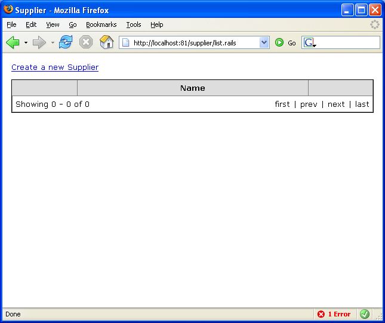
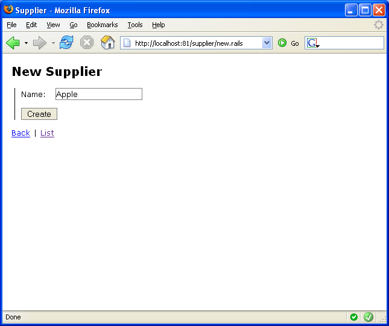

Using ActiveRecord Scaffolding
First lets handle inclusion the easy way. By using ActiveRecord Scaffolding support we can have a crud page with no effort. However Scaffolding is meant to be used to prototype applications only, as you can get something working really fast. During the application lifecycle you should replace the scaffolded controller with a more suitable crud implementation (which we will see in the next page).
Enabling ActiveRecord Scaffolding is real simple.
First of all, add references to the following assemblies:
- Castle.MonoRail.ActiveRecordScaffold
- Castle.MonoRail.ActiveRecordSupport
Now create a controller to manage the Supplier class:
namespace GettingStartedSample.Controllers { using System; using Castle.MonoRail.Framework; using GettingStartedSample.Models; [Scaffolding(typeof(Supplier))] public class SupplierController : Controller { } }
Note the usage of the ScaffoldingAttribute
That is it. Now run the application and direct your browser to /supplier/list.rails


Proceed with Creating a crud page with DataBinder.
Generated by Castle Anakia.
Sponsored by  Castle Stronghold.
Castle Stronghold.